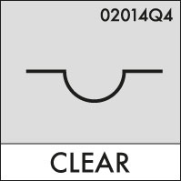

Many years ago, I vividly remember sitting at a conferences complaining about the WiFi with friends and other conference goers. At the time, Apple had just released their dashboard widgets and everyone was testing different weather widgets. That gave us the idea to create a conference WiFi weather widget. It would jokingly tell you a forecast about how good or bad the signal would be at the event; Clear, Partly Cloudy, Stormy or Non-Existant. We never built it, for various reasons, technical and otherwise, but the idea has never left us.
Every once and awhile freelancers and companies post their availability for the next week, month or quarter. More companies are doing this internally and not making it public. We do this, we have an idea of our workload, cashflow and resources for each upcoming month and quarter. Sort of jokingly, internally we have begun to refer to our availability in terms of a weather report: Our Availability Forecast Report.
What started out as a joke has grown and grown, to the point where we even mocked-up a bunch of designs for an Availability Forecast Widget.
We wanted to focus on a handful of metrics that we are watching each month. Firstly, our high and low workload in approximate number of days. If we have enough work to fill one day each week we are probably 15%-20% loaded giving us 80%-85% availability.
Next, we have several internal projects which we are building. These are of varying priority and take a percentage of our time. So we want to monitor how much we are spending on internal projects. We also need to know how much of our workload we can shift if needed. The best organised plans are always subject to delays or new injections of ideas and customers. If some big opportunity appeared, what percentage of the workload is movable to a later date? Usually this is our internal projects, but sometimes it could be other low priority client projects.
We are also tracking how many projects we are finishing and how many we are starting. This allows us to see if we are winding up or down or staying with the same project load. We could be fully booked that month or quarter, but also expect things to be winding down for the following time period.
Using all these variables we began to create a series of dashboard style widgets to get the data across. It needed to be dense, but also build some sort of iconography. We’ve discussed the problems with Mystery Meat navigation and wanted to be more explicit than implicit.
The early versions weren’t much more than a catchy weather term for our work load; Clear, Partly Cloudy, Cloudy, Foggy, etc. That wasn’t very fun, so we started to look further afield, but staying within the weather realm. There is an internationally recognised symbol set for Cloud Types. Really this should be used for uptime in cloud computing, but that’s another story.
We co-opted some of the semi-relavant symbols in our Availability Forecast. Granted, they are cryptic and very mystery-meat of what they mean, so we are providing some real text on all by the smallest designs. We settled on six different symbols to illustrate various levels of business, from 1 day, 2 days, 3 days, 75%, 85% and nearly 100% busy. The final names for these categories hasn’t been finalised, but we are mostly sticking with weather related terms.
Drawing from other sources like candle stick charts used for stocks, we wanted a small, 5 box bar chart-style graph, which could be filled to show some availability. Next to that we originally put our High and Low estimated workload. After some tinkering, we reduced it to just one big number: The percentage of time we are available. Then we added a smaller +/- to show our confidence. Most people don’t care about that, so we reduced the attention it received.
For now, we dropped what percentage of the workload is internal projects and what could be bumped. Sometimes internal projects are revenue generating for us or are longer term revenue generating. Ultimately, this was not useful information for the customer, it was something we used to gauge our workload and there is no reason to show that.
On the widget we also added the period of which this information is valid. This could be a week number or a month, but for us it is usually a quarter.
Finally, we wanted to add a small icon to tell if we were on the project increase, decrease or no-change. This was originally a curling arrow or a not-equals sign with two values: incoming projects and outgoing projects. These icons were redundant since it was easy to see if the incoming value was larger, smaller or the same as the outgoing. We reduced the design further to a box with a 45° line through it. The upper left triangle is incoming project count and the lower right triangle is the outgoing project count.
The point was to let others would know that we might be fully booked now, but the next time period we’d be closing 2 projects and starting zero. So that would be a good time to contact us even if we are fully booked. Conversely, we might be busy now, with no change in the future. While it doesn’t describe the size and scope of incoming and outgoing projects, it is a small indicator of what is happening in the future.
All-in-all, we did several designs, eliminating and making each version more compact. Sometimes this is at the loss of clarity to a novice. Internally, this isn’t a problem, we all know we the symbols mean and we are generally on top of the situation because we are having weekly meetings about it. The general public on the other hand does not.
We’re going to continue to play with the designs and see where this goes and one-day if you see something like this on our website or newsletter, you’ll know what it means.